Lecture 1 · Fixed Points, Feedback, and Adaptive Computation
Architectures, Recurrence,
and Automatic Differentiation
We establish the baseline: standard deep networks as fixed-depth,
feed-forward computation graphs. We review FFNNs, RNNs, and Transformers,
emphasizing RNNs as dynamical systems — the first architecture to break
the fixed-depth mold. We close with automatic differentiation as the
universal tool for computing gradients through arbitrary computation.
presented by
Sergey Plis

Course Arc
The unifying theme of this course is replacing fixed-depth feed-forward computation with iterative, stateful computation — whether via recurrence, equilibrium solving, adaptive depth, explicit memory, or learned test-time updates — so that models can allocate effort where it is needed.
L1
Preliminaries
L2
Fixed points
L3
Adaptive depth
L4
Introspection
L5
Memory
L6
Learned update rules
Feed-Forward Neural Networks
Perceptron
A Neuron & Perceptron

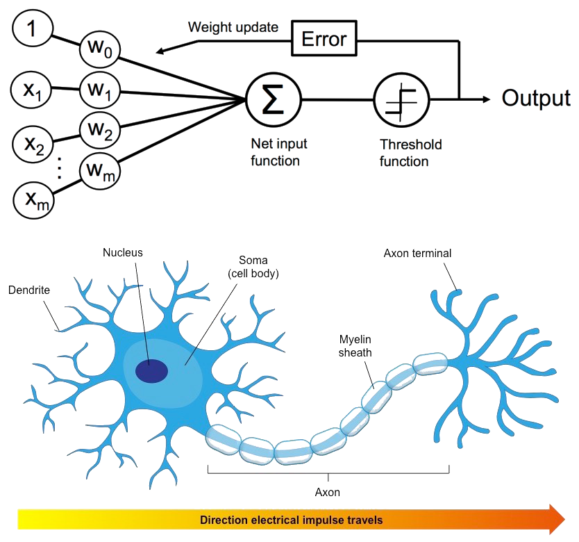
Criterion (Objective):
$ J(\vec{w}) = -\sum_{\text{incorrect } i} l_i\vec{w}^T\vec{x}_i$
$\vec{w}$ represents the parameters of our model (the single perceptron).
$ J(\vec{w}) = -\sum_{\text{incorrect } i} l_i\vec{w}^T\vec{x}_i$
$\vec{w}$ represents the parameters of our model (the single perceptron).
Plane: 0x + 0y + 0z = 0
Intersection: y = 1.00x + 0.00
Intersection: y = 1.00x + 0.00
Controls:
W - Rotate hyperplane in 3D
E - Rotate line in Z=1 plane
R - Move line in Z=1 plane
Right click - Orbit camera
W - Rotate hyperplane in 3D
E - Rotate line in Z=1 plane
R - Move line in Z=1 plane
Right click - Orbit camera
Multilayer Perceptrons (MLPs)
By stacking layers of perceptrons, we create deep feed-forward networks capable of learning hierarchical representations. Features extracted in early layers are combined in deeper layers to solve complex computations.
- Single perceptron $\implies$ Linear decision boundary.
- Stacked layers $\implies$ Complex composition of non-linear functions $\sigma(W\vec{h} + \vec{b})$.
- Computation flows strictly in one direction: input $\to$ hidden layers $\to$ output.
Universal Approximation
Kolmogorov–Arnold Representation Theorem (1956–57)
Hilbert's 13th problem · non-constructive $$f(x_1, \ldots, x_n) = \sum_{q=0}^{2n} \Phi_q\!\left(\sum_{p=1}^{n} \phi_{q,p}(x_p)\right)$$
Hilbert's 13th problem · non-constructive $$f(x_1, \ldots, x_n) = \sum_{q=0}^{2n} \Phi_q\!\left(\sum_{p=1}^{n} \phi_{q,p}(x_p)\right)$$
Cybenko's Theorem (1989)
constructive · the approximator is an explicit neural network $$\left|\, f(\vec{x}) - \sum_{i=1}^{N} \alpha_i\,\sigma\!\left(\vec{w}_i^{\!\top}\vec{x} + b_i\right)\right| < \epsilon$$
constructive · the approximator is an explicit neural network $$\left|\, f(\vec{x}) - \sum_{i=1}^{N} \alpha_i\,\sigma\!\left(\vec{w}_i^{\!\top}\vec{x} + b_i\right)\right| < \epsilon$$
A Literal Ballistic Network
"AI made from a sheet of glass can recognize numbers just by looking."
Precisely placed bubbles and impurities (e.g. graphene) bend light waves so they focus on one of ten spots — each corresponding to a digit. Inference happens at the speed of light, with no power, no memory, no feedback.
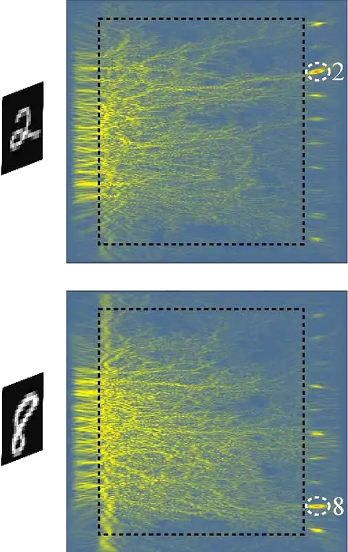
The Ballistic Paradigm
A standard feed-forward network applies a fixed sequence of transformations to every input — the same depth, the same cost, regardless of whether the input is trivial or ambiguous.
- Input $\vec{x}$ flows through layers $\ell = 1, \ldots, L$ without feedback.
- Each layer: $\vec{h}^{(\ell)} = \sigma\!\left(W^{(\ell)}\vec{h}^{(\ell-1)} + \vec{b}^{(\ell)}\right)$
- Depth $L$ is a design choice, not adapted to the input.
- Universal approximation: in principle, any continuous function.
Why Call It "Ballistic"?
Like a projectile once fired, the computation cannot check, correct, or adapt its own intermediate results. There is no iteration, no self-reference, no state beyond the current activation.
- Gradient computed via backprop — training is iterative, inference is not.
- This is the paradigm that the rest of this course challenges.
FFN Section Wrap-Up
- Fixed-depth computation
- Universal approximation exists
- No persistent state
- No iterative correction
Next: recurrent state dynamics and gradients through time.
Recurrent Neural Networks
Recurrent Neural Networks

$$ \vec{h}_t = \tanh\!\left(W_x\vec{x}_t + W_h\vec{h}_{t-1} + \vec{b}\right) $$
RNN as a Map
$$ \vec{h}_{t+1} = F(\vec{x}_t, \mathbf{W}, \vec{h}_t) $$
where $\mathbf{W} = (W_x, W_h, \vec{b})$ collects the trainable parameters.
Back Propagation Through Time
Unroll over time $t=1\dots T$ and apply chain rule to weight $\vec{w}$:
\begin{align}
\frac{\partial L}{\partial \vec{w}} &= \frac{\partial L}{\partial \vec{h}_T} \sum_{k=1}^T \frac{\partial \vec{h}_T}{\partial \vec{h}_{T-k+1}} \frac{\partial \vec{h}_{T-k+1}}{\partial \vec{w}} \\
&= \frac{\partial L}{\partial \vec{h}_T} \sum_{k=1}^T \left( \prod_{i=T-k+2}^{T} J_{F, \vec{h}}(\vec{x}, \vec{w}, \vec{h}^{i-1}) \right) \frac{\partial F}{\partial \vec{w}}
\end{align}
TBPTT (Truncated): We typically unroll only $t_0$ steps to avoid unbounded memory and vanishing gradients. We will dive deeper next lecture!
Long-Term Dependencies
& Vanishing Gradients

- When spectral radius of Jacobian $J_{F, \vec{h}} < 1$, gradients vanish over time.
- When $> 1$, gradients explode.
Standard RNN internally

Long Short-Term Memory (LSTM)
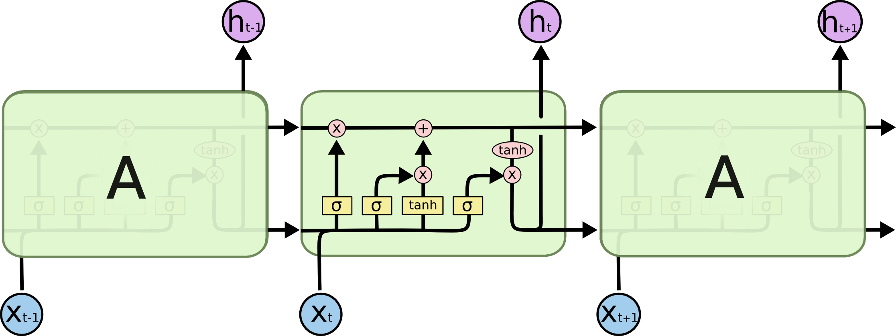
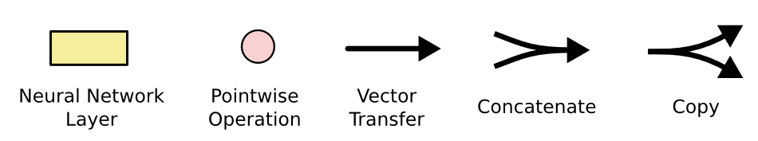
$\vec{f}_t = \sigma\!\left(W_f[\vec{h}_{t-1},\vec{x}_t] + \vec{b}_f\right),\; \vec{i}_t = \sigma\!\left(W_i[\vec{h}_{t-1},\vec{x}_t] + \vec{b}_i\right)$
$\tilde{\vec{c}}_t = \tanh\!\left(W_c[\vec{h}_{t-1},\vec{x}_t] + \vec{b}_c\right),\; \vec{o}_t = \sigma\!\left(W_o[\vec{h}_{t-1},\vec{x}_t] + \vec{b}_o\right)$
$\vec{c}_t = \vec{f}_t \odot \vec{c}_{t-1} + \vec{i}_t \odot \tilde{\vec{c}}_t,\; \vec{h}_t = \vec{o}_t \odot \tanh(\vec{c}_t)$
LSTM: The Essential Skip Connection
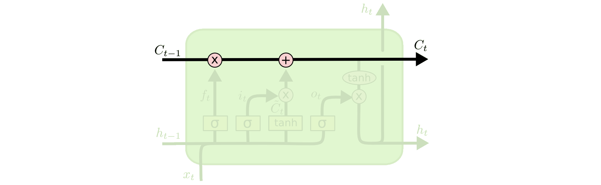
By carrying state $C_t$ with purely additive interactions, gradients can flow backwards completely unhindered! The "constant error carousel."
Modes of Sequence Processing
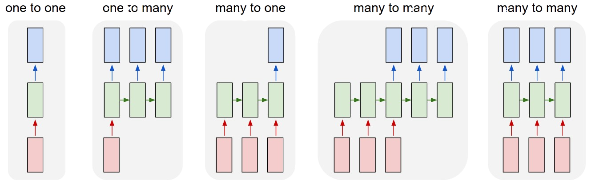
Vanilla, Sequence output, Sequence input, Sequence-to-sequence, synced Sequence-to-sequence.
Sequence-to-Sequence (Seq2Seq)
Map a sequence $\vec{x}_{1:T_x}$ to $\vec{y}_{1:T_y}$ using
an Encoder and a Decoder.
an Encoder and a Decoder.
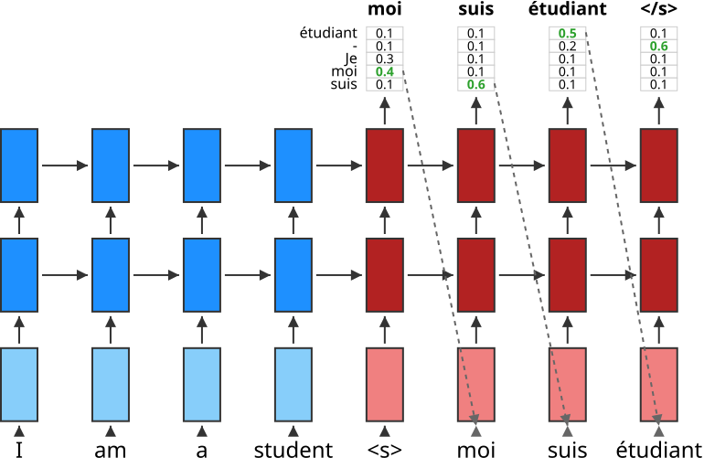
- Encoder: Processes input to a fixed-length context vector $\vec{c} = \vec{h}_{T_x}$.
- Decoder: Generates output conditioned on $\vec{c}$ and previous outputs.
- The Bottleneck: The entire input must be compressed into a single vector $\vec{c}$.
Attention
Instead of one static context vector $\vec{c}$, let the Decoder "attend" to all Encoder states dynamically at each step.
For decoder hidden state $\vec{s}_i$, compute alignment scores with all encoder states $\vec{h}_j$:
$$ e_{ij} = a(\vec{s}_{i-1}, \vec{h}_j) $$
Convert to attention weights via softmax:
$$ \alpha_{ij} = \frac{\exp(e_{ij})}{\sum_k \exp(e_{ik})} $$
Compute dynamic context vector as weighted sum:
$$ \vec{c}_i = \sum_j \alpha_{ij} \vec{h}_j $$
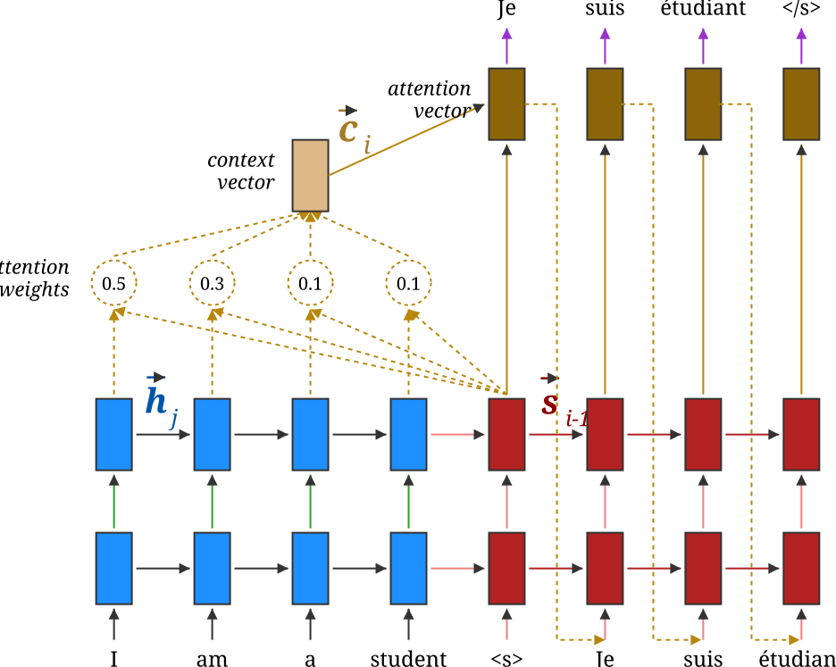
Dot-Product Attention
Same attention pipeline, different alignment score. Luong et al. compare dot, general, and concat scoring functions.
Dot score:
$$e_{ij}=\vec{s}_i^\top\vec{h}_j$$
Luong alternatives general and concat are shown in the diagram.
$$\alpha_{ij}=\operatorname{softmax}_j(e_{ij}),\qquad \vec{c}_i=\sum_j\alpha_{ij}\vec{h}_j$$
Dot-product is parameter-light and efficient, while preserving the same context-vector computation.
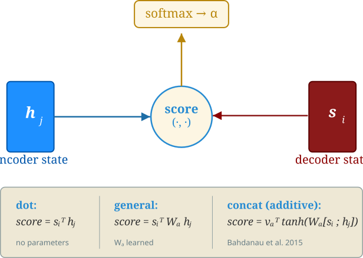
RNN Section Wrap-Up
- Stateful sequence modeling
- Gradient pathologies persist
- Attention relieves bottleneck
- Parallelism becomes decisive
Next: hardware lottery, token mixing, and self-attention as an on-the-fly linear operator.
Transformers
Hardware Lottery
Dominant hardware rewards some
algorithmic structures and penalizes others.
algorithmic structures and penalizes others.
Match

- GPU + dense linear algebra
- TPU + large batched tensor ops
- Multicore CPU + parallel map/reduce
Mismatch
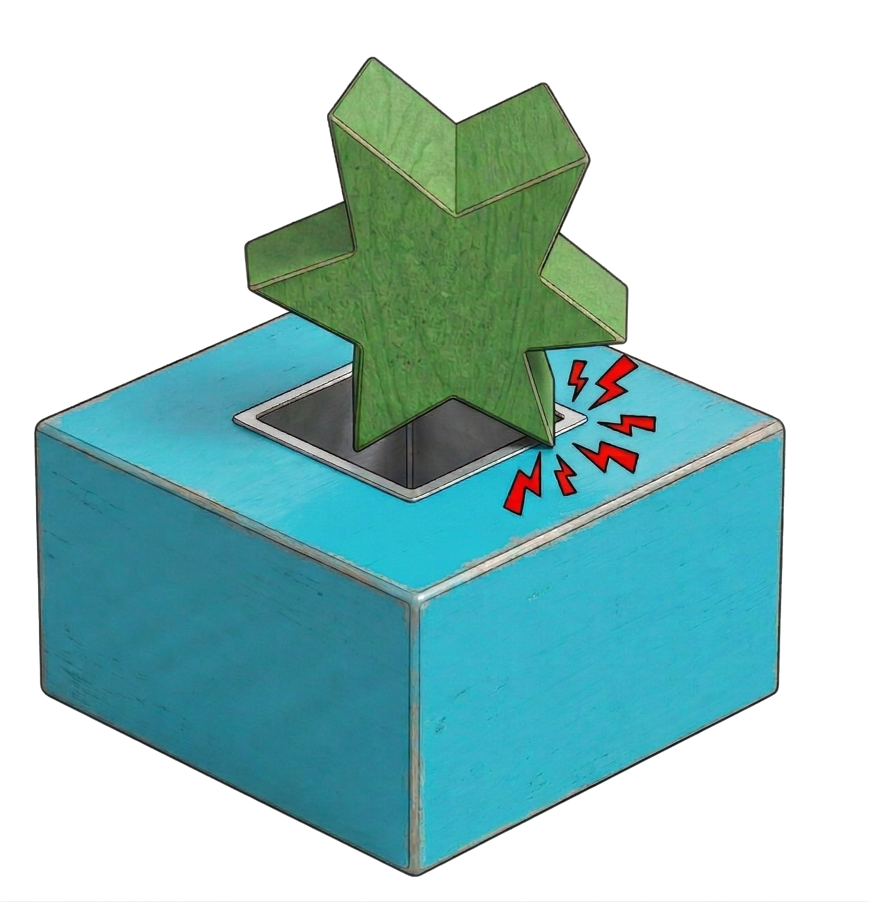
- GPU + serial recurrence
- SIMD + branching / irregular control flow
- Throughput hardware + sparse adaptive search
MLP = Dense LA + GPU
$$
f(\vec{x})=W_L\,\phi\!\left(W_{L-1}\,\phi\!\left(\cdots\phi\!\left(W_2\,\phi\!\left(W_1\vec{x}\right)\right)\cdots\right)\right)
$$
batched matrix multiply + elementwise nonlinearity → repeat
MLP Mixer
MLP Mixing → Self-Attention
weighted bilinear score
$$e_{ij}=\vec{x}_i^{\top}W\vec{x}_j$$
factor the weight matrix
$$W = W_Q^{\top}W_K$$
$$e_{ij}=(W_Q\vec{x}_i)^{\top}(W_K\vec{x}_j)$$
$$Q=XW_Q$$
$$K=XW_K$$
$$A = \operatorname{softmax}(QK^{\top})$$
Token mixing becomes data-dependent.
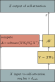
Transformer Block
$$Q=XW_Q,\ K=XW_K,\ V=XW_V$$
$$A = \operatorname{softmax}\!\left(\frac{QK^{\top}+M}{\sqrt{d_k}}\right),\ Z=AV$$
$$X' = X + Z$$
$$\mathrm{FFN}(X') = \left(W_2\phi(W_1{X'}^{\top})\right)^{\top}$$
$$X'' = X' + \mathrm{FFN}(X')$$
pre-norm layout shown; $M_{ij}=0$ for $j\le i$, $M_{ij}=-\infty$ for $j>i$ (decoder)
attention mixes tokens; FFN mixes features within each token
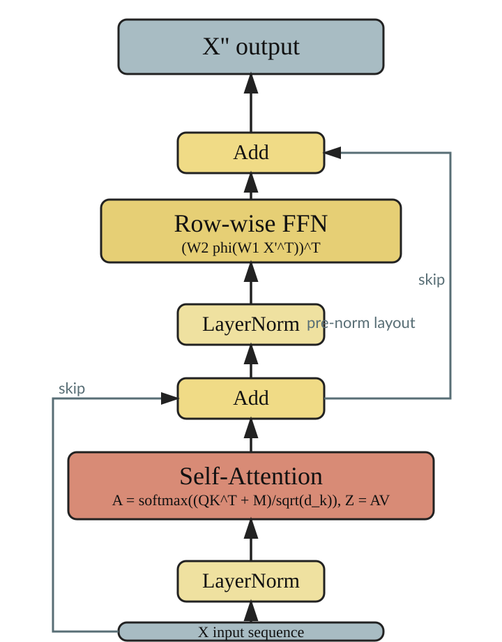
Attention: A Data-Dependent Operator
The attention matrix $\mathcal{A}$ is not a fixed learned parameter. It is computed on the fly from the input: $Q = XW_Q,\ K = XW_K$.
- This makes attention a higher-order function: input → mixing weights → output.
- Later lectures show this on-the-fly computation can itself be iteratively refined (L4/SELF-Transformer).
- … used as differentiable memory access (L5).
- … or adapted at test time (L6).
Encoders, Decoders, and Fixed Depth
- Encoder: $N$ identical layers, each with Multi-Head Attention + FFN + residual + LayerNorm.
- Decoder: additionally attends to encoder output (cross-attention).
- Fixed depth: every token gets exactly $N$ layers regardless of its difficulty. The Transformer is still "ballistic" in the depth dimension.
- Positional encodings inject sequence order (no built-in recurrence).
Transformer Section Wrap-Up
- Data-dependent token mixing
- Hardware-friendly parallelism
- Fixed-depth computation
- Still ballistic overall
Next: automatic differentiation for arbitrary computation graphs.
Automatic Differentiation
Algorithmic Differentiation (AD)
".. may be one of the best scientific computing techniques you've never heard of."
Alexey Radul
The very first computer science PhD dissertation introduced forward accumulation mode
automatic differentiation.
Wengert (1964)
Robert Edwin Wengert. A simple automatic derivative evaluation program. Communications of the ACM 7(8):463–4, Aug 1964.
A procedure for automatic evaluation of total/partial derivatives of arbitrary algebraic functions is presented. The technique permits computation of numerical values of derivatives without developing analytical expressions for the derivatives. The key to the method is the decomposition of the given function, by introduction of intermediate variables, into a series of elementary functional steps. A library of elementary function subroutines is provided for the automatic evaluation and differentiation of these new variables. The final step in this process produces the desired function's derivative. The main feature of this approach is its simplicity. It can be used as a quick-reaction tool where the derivation of analytical derivatives is laborious and also as a debugging tool for programs which contain derivatives.
R. E. Bellman, H. Kagiwada, and R. E. Kalaba (1965) Wengert's numerical method for partial derivatives, orbit determination and quasilinearization, Communications of the ACM 8(4):231–2, April 1965, doi:10.1145/363831.364886
In a recent article in the Communications of the ACM, R. Wengert suggested a technique for machine evaluation of the partial derivatives of a function given in analytical form. In solving nonlinear boundary-value problems using quasilinearization many partial derivatives must be formed analytically and then evaluated numerically. Wengert's method appears very attractive from the programming viewpoint and permits the treatment of large systems of differential equations which might not otherwise be undertaken.
What is Automatic Differentiation?
Automatic Differentiation (AD) mechanically calculates the derivatives (Leibnitz, 1664; Newton, 1704) of functions expressed as computer programs, at machine precision, and with complexity guarantees.
Automatic Differentiation
- Derivative of $f: \RR^n \to \RR^m$ is $m\times n$ "Jacobian matrix" $\bm{J}$.
- AD in the forward accumulation mode: $\bm{J}v$ (Wengert, 1964)
- AD in the reverse accumulation mode, $\bm{J}^Tv$ (Speelpenning, 1980)
- About a zillion other modes and tricks
- Vibrant field with regular workshops, conferences, updated community portal (http://autodiff.org)
What is AD?
- Automatic Differentiation
- aka Algorithmic Differentiation
- aka Computational Differentiation
- aka Algorithmic Differentiation
- AD Type I
- A calculus for efficiently calculating derivatives of functions specified by a set of equations.
- AD Type II
- A way of transforming a computer program implementing a numeric function to also efficiently calculate some derivatives.
- AD Type III
- A computer program which automatically transforms an input computer program specifying a numeric function into one that also efficiently calculates derivatives.
AD is not Numerical Differentiation
Numerical diffirentiation is a problematic approximation
- though shalt not add small numbers to big numbers
- though shalt not subtract numbers which are approximately equal
What is wrong with Numerical Differentiation
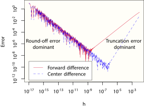
AD is not Symbolic Differentiation
\begin{align} f(\vec{x}) & = \prod_{i=1}^d x_i \\ \nabla f(\vec{x}) & = \left(\frac{\partial f}{\partial x_1}, \frac{\partial f}{\partial x_2}, \dots, \frac{\partial f}{\partial x_d},\right) = \left(\begin{array}{ccccc} x_2x_3x_4\cdots x_{d-1}x_d, \\ x_1x_3x_4\cdots x_{d-1}x_d, \\ x_1x_2x_4\cdots x_{d-1}x_d, \\ \vdots \\ x_1x_2x_3\cdots x_{d-1} \\ \end{array}\right) \end{align}
We want exact derivative at a point!
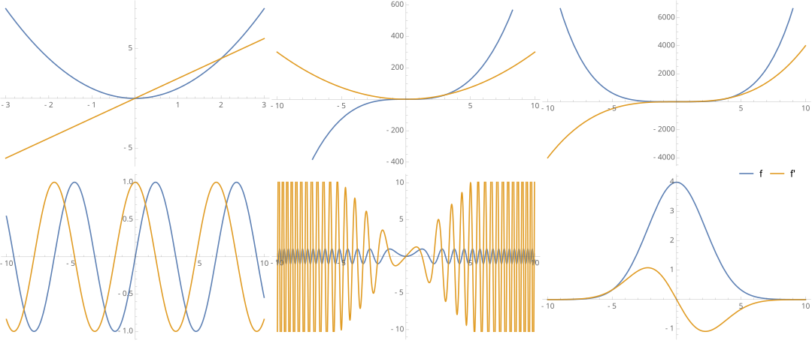
Forward Mode AD
AD is
AD is
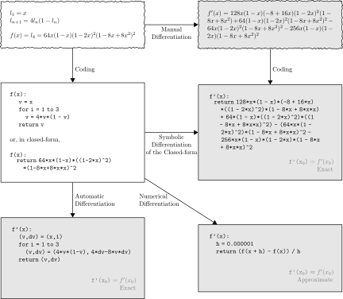
AD graph
$$ y = f(x_1, x_2) = \ln(x_1) + x_1x_2 - \sin(x_2) $$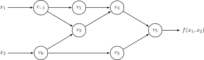
AD trace
AD
AD: a Jacobian column in a pass
AD: directional derivative
Dual numbers (1873)
\begin{align} \fragment{1}{v + \dot{v}\epsilon} &\\ \fragment{2}{v, \dot{v} \in \RR,} & \fragment{2}{\epsilon \ne 0, \epsilon^2 = 0} \\ \fragment{3}{(v + \dot{v}\epsilon) + (u + \dot{u}\epsilon)} & \fragment{3}{= (v + u) + (\dot{v} + \dot{u})\epsilon}\\ \fragment{4}{(v + \dot{v}\epsilon)(u + \dot{u}\epsilon)} & \fragment{4}{= (vu) + (v\dot{u} + u\dot{v})\epsilon}\\ \fragment{5}{\frac{v + \dot{v}\epsilon}{u + \dot{u}\epsilon}} & \fragment{5}{= \frac{v}{u} + \frac{u\dot{v} - v\dot{u}}{u^2}\epsilon}\\ \fragment{6}{f(v+\dot{v}\epsilon)} & \fragment{6}{= f(v) + f^{\prime}(v)\dot{v}\epsilon}\\ \fragment{7}{f(g(v+\dot{v}\epsilon))} & \fragment{7}{= f(g(v)) + f^{\prime}(g(v))g^{\prime}(v)\dot{v}\epsilon}\\ \fragment{8}{v + \dot{v}\epsilon} & \fragment{8}{\cong \begin{pmatrix} v & \dot{v} \\ 0 & v \end{pmatrix}} \end{align}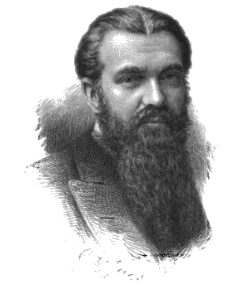
William Kingdon Clifford
(1845 – 1879)
(1845 – 1879)
Back propagation
the classical presentation
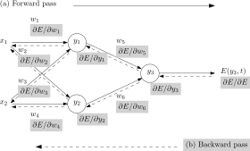
Reverse Mode AD
In the 1970s, tools for automated generation of adjoint codes (aka reverse accumulation mode automatic differentiation, aka backpropagation) were developed.Type I: Pure Mathematics. Brilliant derivations of the adjoint state method for specific continuous systems. It required a human genius doing pure calculus, not automated algorithms.Type II: Hand-Coded Gradients. The manual derivation and hard-coding of reverse-mode difference equations (like old-school neural network backprop). It was tedious and incredibly topology-specific.Type III: Source-to-Source Compilers. A specialized compiler deeply analyzes your source code's AST and explicitly writes thousands of lines of new source code representing the exact derivative.Type IV: Differentiable Programming. The modern standard. Gradients are natively generated dynamically on-the-fly with first-class AD operators implicitly integrated into the language or framework.
- Type I
- Geniuses transforming mathematical systems
(Gauss; Feynman (1939); Rozonoer and Pontryagin (1959)) - Type II
- Manual transformation of computational processes
(Bryson (1962); Werbos (1974); Le Cun (1985); Rumelhart et al. (1986)) - Type III
- Computer programs transform other computer programs
(Speelpenning (1980); LUSH; TAPENADE) - Type IV
- First-class AD operators; closure
(STALIN$\nabla$; R$^6$RS-AD; AUTOGRAD; DIFFSHARP)
Bert Speelpenning
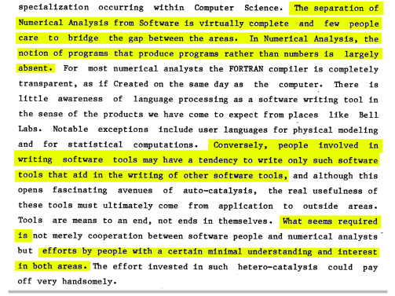
Two Directions, Three Traces
\begin{align} y &= \log(\sin(x^2)) \end{align}
- Traces:
- Primal
- Tangent Derivative
- Cotangent Derivative
- Direction:
- $\rightarrow$ Forward
- $\rightarrow$ Forward
- $\leftarrow$ Reverse
Computation Graph
- Following precedence rules
- binary/n-ary operators allowed $\rightarrow$ DAG (tree)
- $y =$ root, $x =$ leaves
Intermediate Variables: $z_i$
\begin{align} x &\\ z_1 &= x^2\\ z_2 &= \sin(z_1)\\ z_3 &= \log(z_2)\\ y &= z_3\\ \end{align}
Adjoint: $\bar{z_i} = \frac{\partial y}{\partial z_i}$
Example
\begin{align} x &\\ z_1 &= x^2\\ z_2 &= \sin(z_1)\\ z_3 &= \log(z_2)\\ y &= z_3\\ \end{align}
- $\bar{x} = \left(\left(\frac{\partial y}{\partial z_3}\frac{\partial z_3}{\partial z_2}\right) \frac{\partial z_2}{\partial l z_1}\right)\frac{\partial z_1}{\partial x}$
- $\bar{x} = \frac{\partial y}{\partial x} = \frac{\partial y}{\partial z_1}\frac{\partial z_1}{\partial x} = \bar{z}_1 2 x$
- $\bar{z}_1 = \frac{\partial y}{\partial z_1} = \frac{\partial y}{\partial z_2}\frac{\partial z_2}{\partial z_1} = \bar{z}_ 2\mathrm{cos}(z_1)$
- $\bar{z}_2 = \frac{\partial y}{\partial z_2} = \frac{\partial y}{\partial z_3}\frac{\partial z_3}{\partial z_2} = \bar{y}\ \frac{1}{z_2}$
- $\bar{z}_3 = \frac{\partial y}{\partial z_3} = \frac{\partial y}{\partial y} = \bar{y} = 1$ (seed)
\begin{align} \bar{x} & \fragment{6}{= \bar{z}_1 2 x}\\ &\fragment{7}{= (\bar{z}_2\mathrm{cos}(z_1) ) 2 x}\\ &\fragment{8}{= \left(\left(\bar{z}_3 \frac{1}{z_2} \right) \mathrm{cos}(x^2) \right) 2 x}\\ &\fragment{9}{= \left(\left( \frac{1}{\mathrm{sin}(z_1)} \right) \mathrm{cos}(x^2) \right) 2 x}\\ &\fragment{10}{= \left(\left( \frac{1}{\mathrm{sin}(x^2)} \right) \mathrm{cos}(x^2) \right) 2 x}\\ &\fragment{11}{= \left( \mathrm{cot}(x^2) \right) 2 x\ = 2 x ~\mathrm{tan} \left( \frac{\pi}{2} - x^2\right)}\\ \end{align}
References
-
1
R. F. Silva, S. M. Plis, T. Adalı, M. S. Pattichis, V. D. Calhoun.
Multidataset Independent Subspace Analysis with Application to Multimodal Fusion
IEEE Transactions on Image Processing, 2021 · arXiv:1911.04048 -
2
A. G. Baydin, B. A. Pearlmutter, A. A. Radul, J. M. Siskind.
Automatic Differentiation in Machine Learning: a Survey
Journal of Machine Learning Research, 18(153):1–43, 2018 · arXiv:1502.05767 -
3
S. Geeraert, C.-A. Lehalle, B. Pearlmutter, O. Pironneau, A. Reghai.
Mini-Symposium on Automatic Differentiation and its Applications in the Financial Industry
ESAIM: Proceedings and Surveys, Vol. 59, pp. 56–75, 2017 · arXiv:1703.02311
Takeaways
- FFNNs & Transformers are "ballistic" — fixed depth, fixed cost per input; the paradigm this course challenges.
- RNNs are dynamical systems — hidden state as lossy summary; convergent RNN → fixed point of $f_\theta$ (L2).
- Attention is a higher-order, data-dependent operator — $\mathcal{T}$ computed on the fly, previewing L4 / L5 / L6.
- Automatic differentiation — exact $\mathbf{J}v$ / $\mathbf{J}^\top v$ for any computation graph; the tool for what comes next.